Инструкция по управлению сайтом "MDED"
Это руководство поможет вам вносить изменения в структуру и контент вашего сайта!
1. Управление меню и навигацией |Nav|
Навигационное меню позволяет пользователям быстро переходить к ключевым разделам сайта. Следующая инструкция объясняет, как добавить новую ссылку в основное меню.
Важное замечание:
В этом меню можно добавить два типа ссылок:
- Обычная ссылка на внешнюю или внутреннюю страницу.
- Якорная ссылка на существующий раздел на главной странице. Для этого программист должен предварительно добавить уникальный
idк нужному блоку. Например, для блока "FAQ"idможет быть#faq, и именно его нужно будет указать при добавлении ссылки.
Как добавить новую ссылку в меню
Шаг 1. Откройте настройки кастомизации.
На главной странице сайта нажмите на кнопку "Customize" (Кастомизировать).
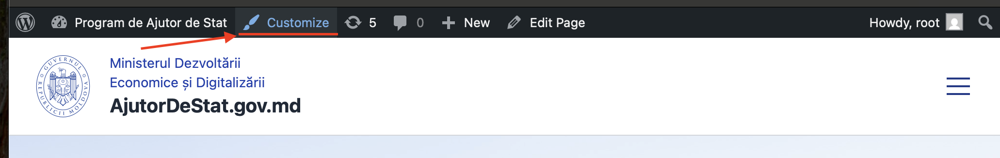Шаг 2. Перейдите в раздел "Menus".
В боковом меню выберите пункт "Menus" (Меню).
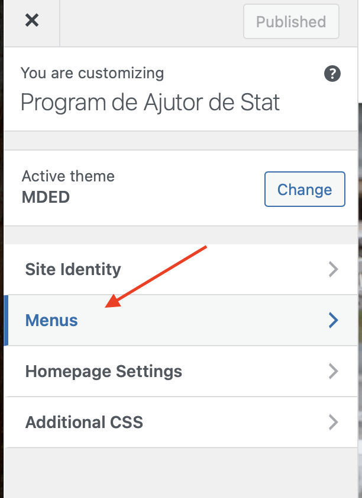Шаг 3. Выберите "Main Menu".
Выберите "Main Menu" (Главное меню) для редактирования.
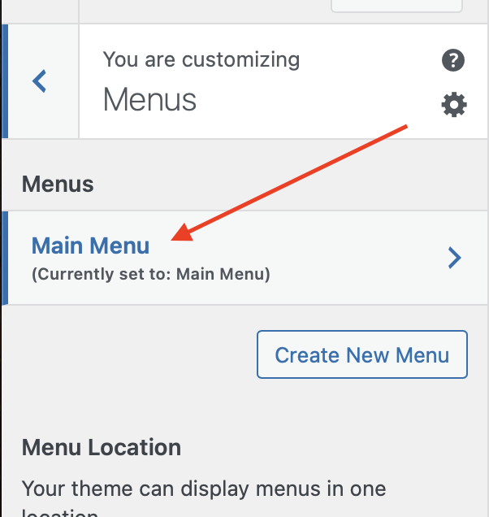Шаг 4. Добавьте новый элемент.
В открывшемся списке текущих пунктов меню нажмите кнопку "Add Items" (Добавить элементы).
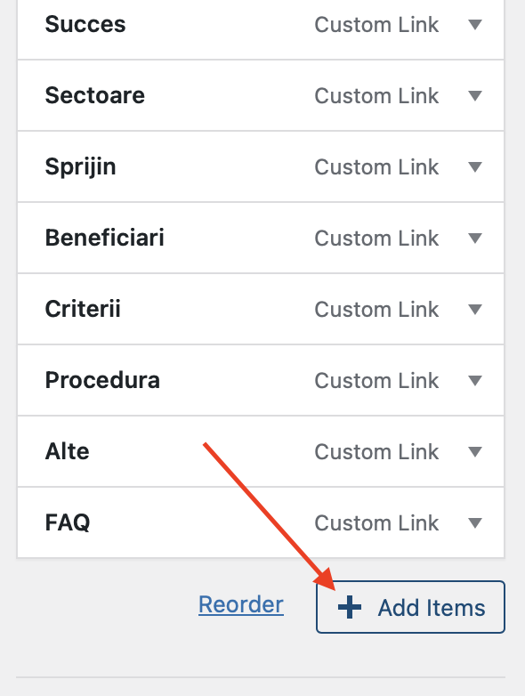Шаг 5. Выберите "Custom Links".
Нажмите на раскрывающийся блок "Custom Links" (Пользовательские ссылки).
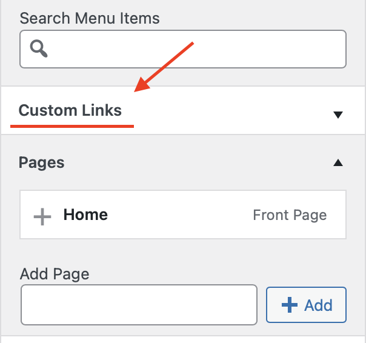Шаг 6. Заполните поля.
В поле "URL" введите полный адрес страницы или якорный ID (например, #my-new-section). В поле "Link Text" введите название, которое будет отображаться в меню (например, "Новый раздел").
Шаг 7. Опубликуйте изменения.
После добавления нового элемента нажмите кнопку "Publish" (Опубликовать) в верхней части экрана, чтобы сохранить изменения и сделать их видимыми на сайте.
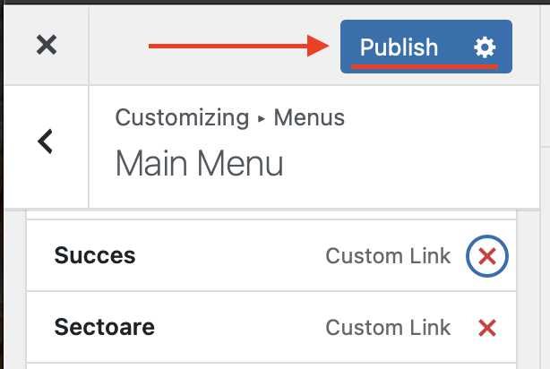2. Главная сеция |Hero|
Смена фотографий слайда
Шаг 1.1. Выберите пункт "Slide-uri".
Для смены фотографий слайдов в главной секции Hero выберите пункт "Slide-uri" (Слайды) в боковом меню.
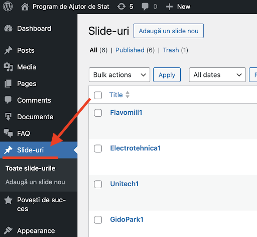Шаг 1.2. Просмотр существующих слайдов.
Здесь вы видите уже добавленные фотографии, которые чередуются между собой на сайте в виде слайдов.
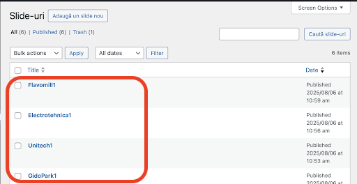Шаг 1.3. Добавление нового слайда.
Чтобы добавить новый слайд, нажмите кнопку "Adaugă un slide nou" (Добавить новый слайд).
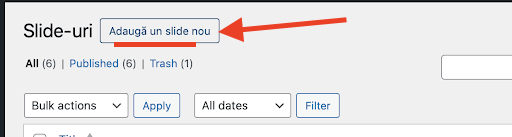Шаг 1.4. Дайте название фотографии.
Дайте название новому слайду. Это поможет вам его идентифицировать в дальнейшем.
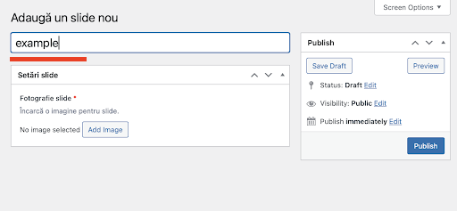Шаг 1.5. Нажмите "Add Image".
Нажмите кнопку "Add Image" (Добавить изображение), чтобы выбрать или загрузить фотографию.
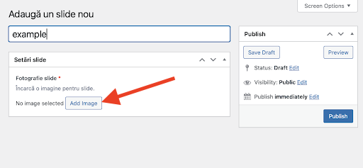Шаг 1.6. Выбор существующей фотографии.
В открывшемся окне вы можете выбрать уже существующую фотографию из вашей медиатеки. Выберите нужную и нажмите "Select" (Выбрать).
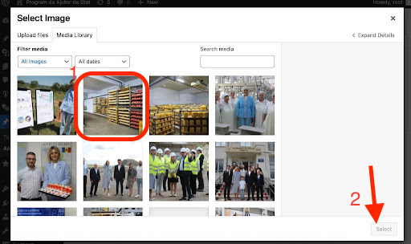Шаг 1.7. Загрузка новой фотографии.
Чтобы загрузить новую фотографию, перейдите во вкладку "Upload files" (Загрузить файлы). Загрузите изображение, выберите его, нажмите "Select".
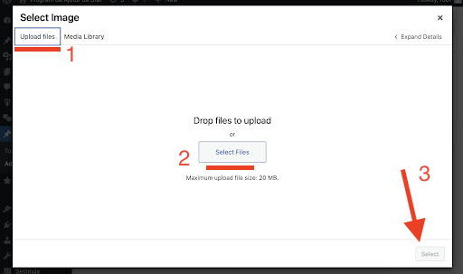Шаг 1.8. Публикация новой фотографии.
После загрузки и выбора нужной фотографии слайда нажмите "Publish" (Опубликовать), чтобы добавить новый слайд на сайт.
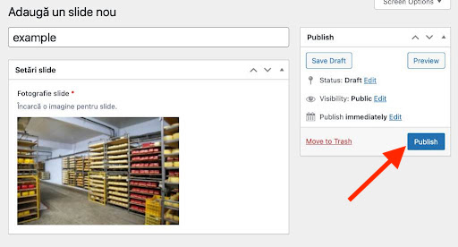Удаление слайдов
Шаг 2.1. Удаление слайдов.
Чтобы удалить слайд, поставьте галочку рядом с ним, выберите "Move to Trash" (Переместить в корзину) в выпадающем меню и нажмите "Apply" (Применить).
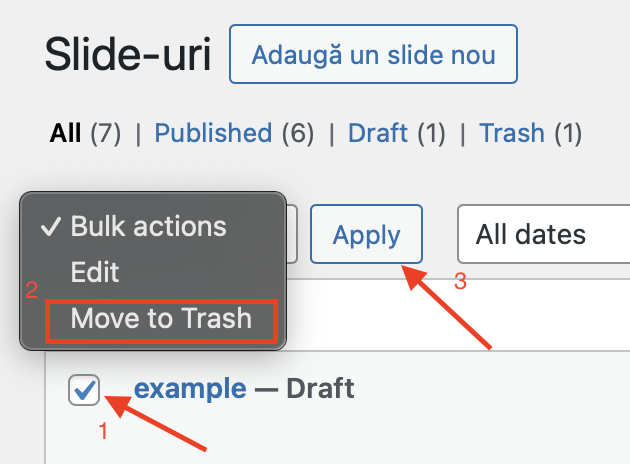Изменение контента
Шаг 3.1. Перейдите на страницу Home.
Для изменения контента главной секции Hero перейдите на страницу "Home" (Главная).
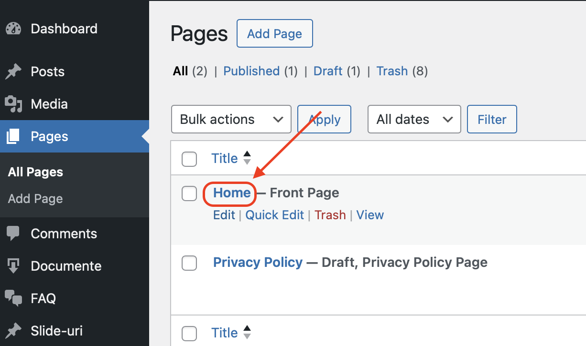Шаг 3.2. Откройте Hero Section.
Найдите и разверните секцию "Hero Section", чтобы увидеть поля для изменения текста.
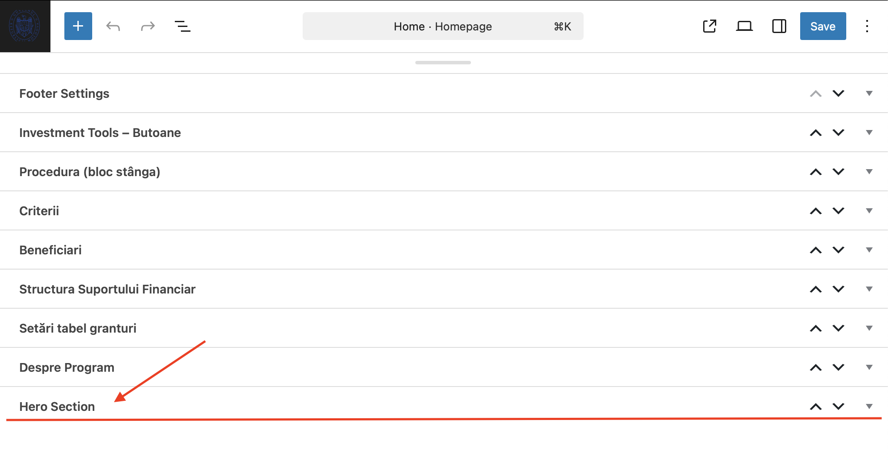Шаг 3.3. Сохраните изменения.
После внесения изменений в текст нажмите кнопку "Save" (Сохранить) в правом верхнем углу, чтобы применить их на сайте.
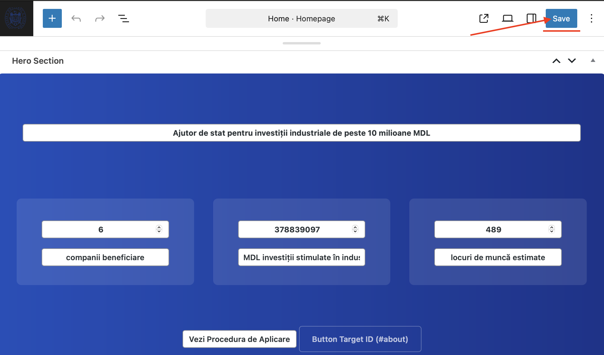3. О нас |Scopul programului|
Изменение контента
Шаг 1. Перейдите на страницу Home.
Чтобы изменить контент в этой секции, так же, как и для секции Hero, зайдите на страницу "Home" (Главная).
Шаг 2. Найдите секцию "Scopul programului".
Найдите раздел "Scopul programului" (О программе) и измените контент в полях. После этого нажмите "Save" (Сохранить) в правом верхнем углу.
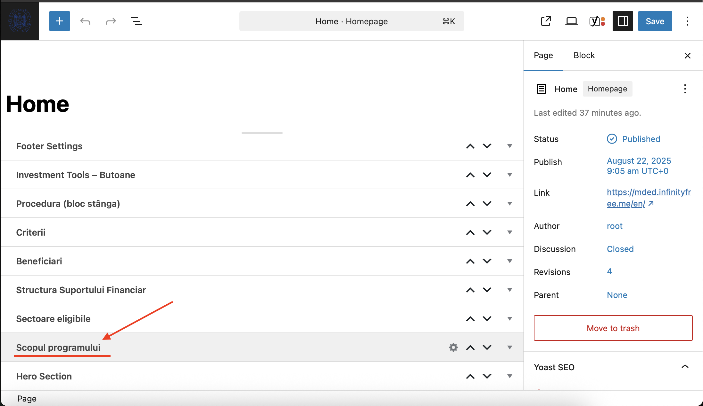Управление пунктами
Шаг 3. Зайдите в ACF.
Если вы хотите добавить или удалить пункт, зайдите в раздел "ACF" в боковом меню.
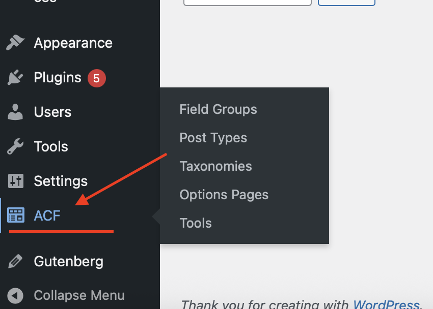Шаг 4. Выберите "Scopul programului".
Выберите "Scopul programului" из списка.
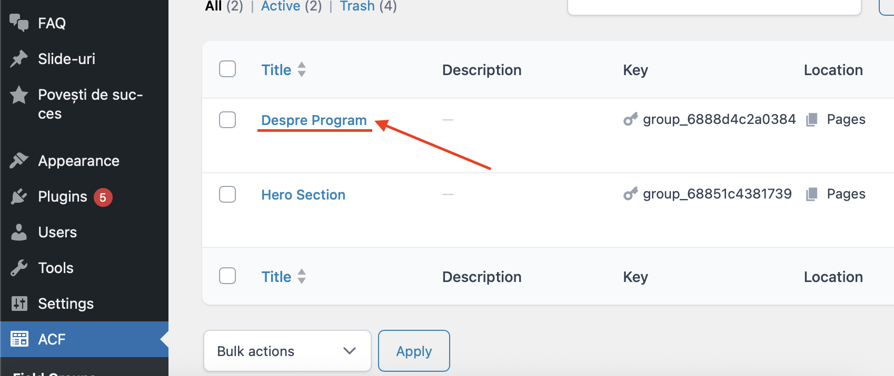Шаг 5. Добавление или удаление пунктов.
Здесь вы можете добавить новый пункт "contribuind" или удалить существующий.
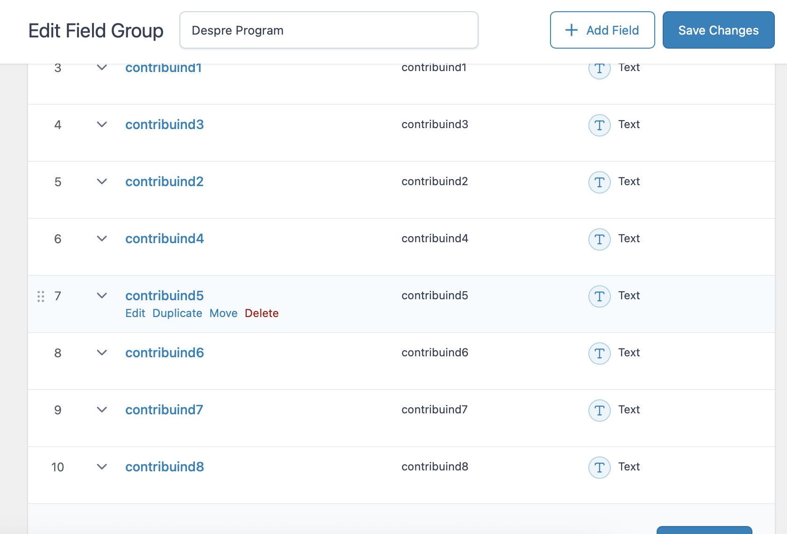Шаг 6. Следите за нумерацией.
Обязательно учитывайте порядок по цифрам в конце названия поля.
Шаг 7. Пример правильного заполнения.
Вот пример, как правильно и куда писать `contribuind`.
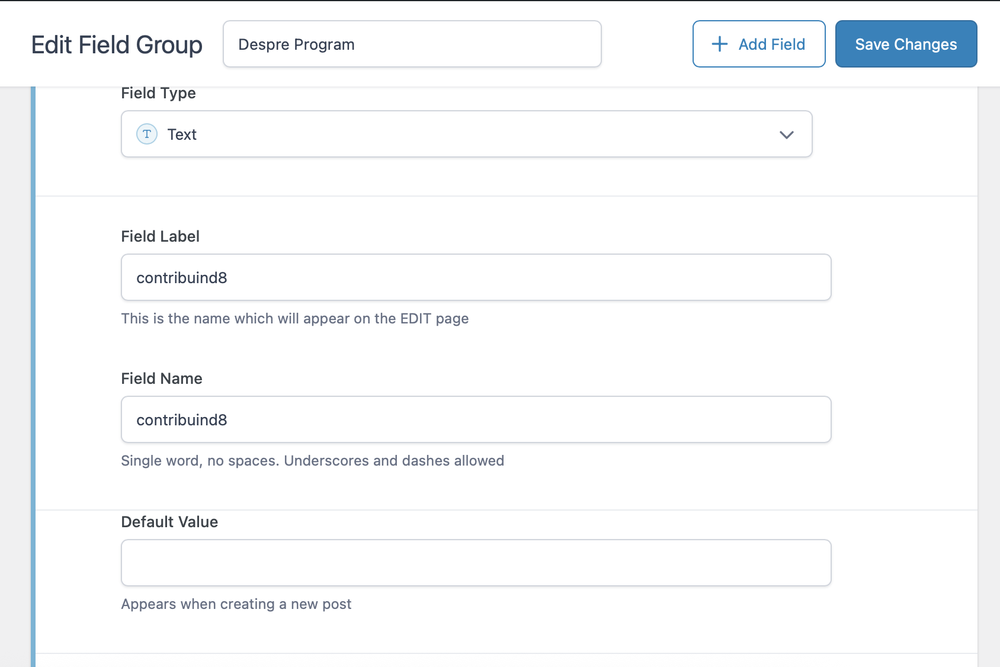Шаг 8. Добавление или удаление.
Нажмите "Add Field" (Добавить поле), чтобы добавить новый `contribuind`, или "Delete" (Удалить), чтобы удалить существующий.
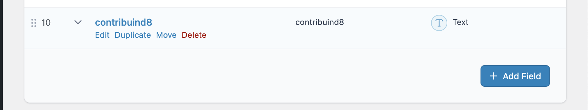Шаг 9. Сохранение изменений.
После добавления нового поля вам нужно заполнить его значением и нажать "Save Changes" (Сохранить изменения), чтобы изменения применились на сайте.
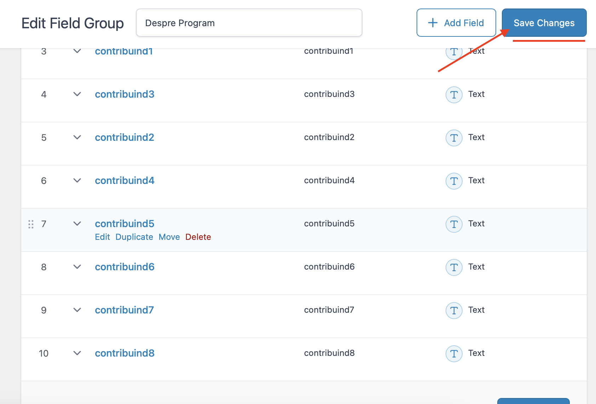Шаг 10. Изменения новых пунктов.
После того как вы добавили новый пункт через ACF заходим в "Home" выбираем наше меню Scopul programului и видим в конце наш новый пункт. Вводим наше значения для нашего пункта нового и нажимаем "Save" (Сохранить изменения), чтобы изменения применились на сайте.
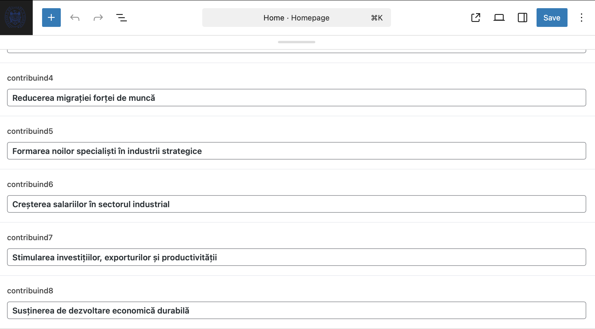4. История успеха |Succes|
Добавление нового блока истории
Шаг 1. Перейдите в "Povești de succes".
Чтобы добавить новый блок истории, зайдите в административную панель и выберите пункт "Povești de succes" (Истории успеха).
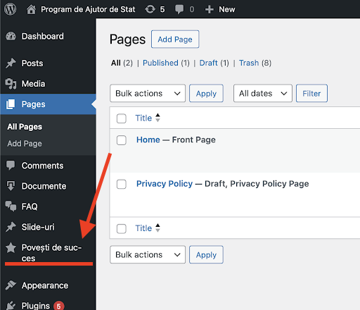Шаг 2. Просмотр существующих историй.
В этом окне вы увидите список уже существующих историй успеха.
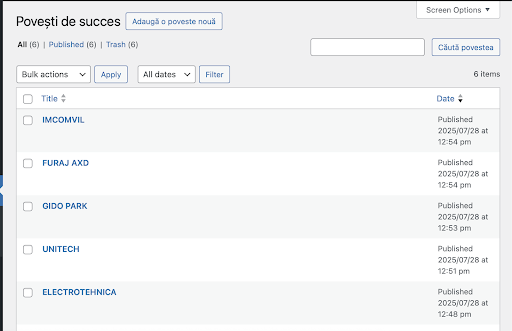Шаг 3. Нажмите "Adaugă o poveste nouă".
Нажмите кнопку "Adaugă o poveste nouă" (Добавить новую историю).
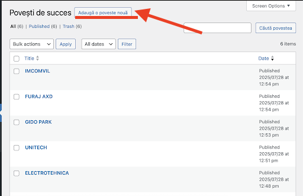Шаг 4. Дайте название блоку.
Обязательно дайте название новому блоку в поле "Tittle". Это название будет отображаться для вас в списке историй, например, "Example SRL".
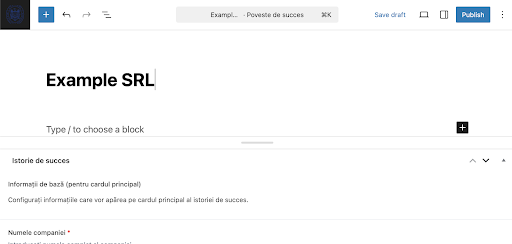Шаг 5. Заполните контент.
Заполните поля контента блока, которые расписаны ниже.
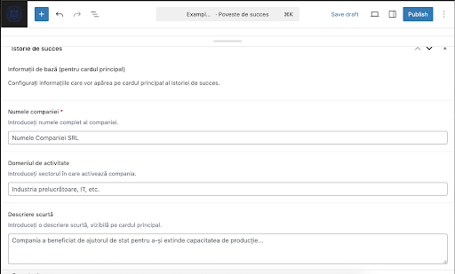Шаг 6. Нажмите "Add Media".
Для добавления фотографий нажмите кнопку "Add Media" (Добавить медиа).
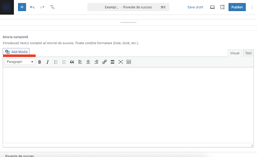Шаг 7. Создайте галерею и выберите фото.
Выберите опцию "Media Library" и выберите фотографии, которые хотите добавить.
Если хотите сразу несколько добавить то зажмите кнопку "Shift" и нажимайте по фотографиям.
Шаг 8. Загрузите новые фото (если нужно).
Если нужных фотографий нет, сначала загрузите их, а затем создайте галерею. Это очень важный шаг.
Шаг 10. Проверка в текстовом режиме.
При нажатии на вкладку "Text", вы должны увидеть код галереи, например, img .... Никакого другого текста рядом не должно быть.
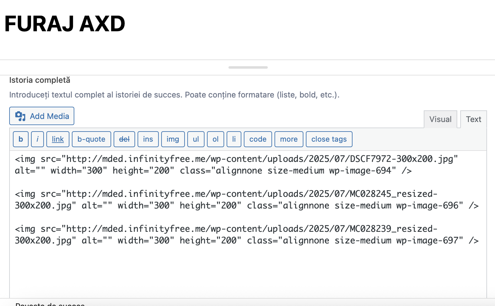Шаг 11. Завершите заполнение и опубликуйте.
Заполните весь контент до конца и нажмите кнопку "Publish" (Опубликовать).
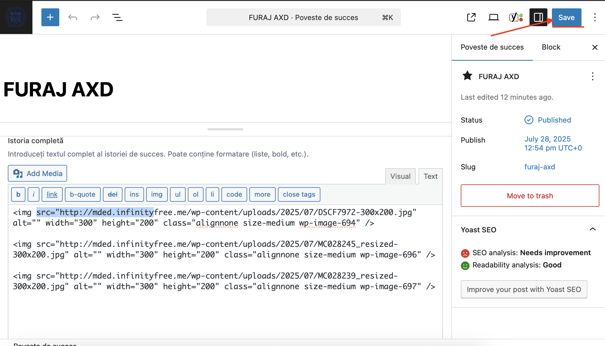Шаг 12. Убедитесь, что блок добавлен.
После публикации вы должны увидеть новый блок в списке историй.
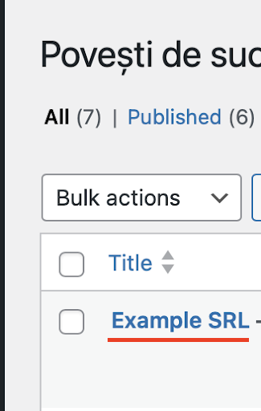5. Приемлемые сектора |Sectoare eligibile|
Изменение контента
Шаг 1. Перейдите на страницу Home.
Чтобы изменить контент этой секции, зайдите в административную панель и выберите страницу "Home".

Шаг 2. Выберите "Setări tabel granturi".
На странице "Home" найдите и разверните блок "Setări tabel granturi" (Настройки таблицы грантов).
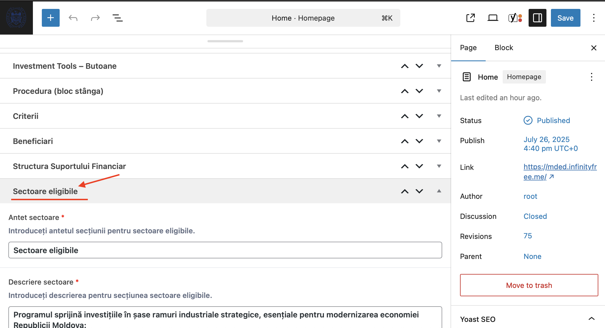Шаг 3. Измените контент.
Измените необходимый контент в полях, которые вам нужно отредактировать.
Шаг 4. Сохраните изменения.
Нажмите кнопку "Save" (Сохранить) в правом верхнем углу, чтобы применить изменения на сайте.
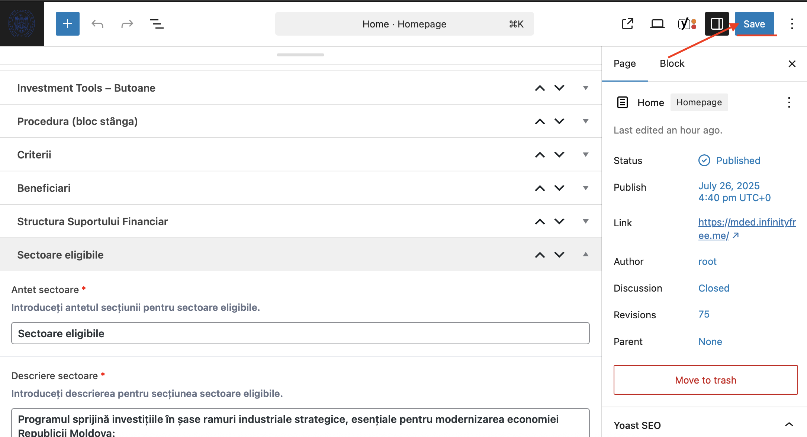6. Финансовая поддержка |Sprijin|
Изменение контента
Шаг 1. Перейдите на страницу Home.
Чтобы внести изменения, перейдите на страницу "Home" из административного меню.

Шаг 2. Выберите "Structura suportului financiar".
На странице "Home" выберите и разверните меню "Structura Suportului Financiar" (Структура финансовой поддержки), чтобы изменить данные.

Шаг 3. Сохраните изменения.
После внесения изменений нажмите кнопку "Save" (Сохранить), чтобы опубликовать их на сайте.

7. Кто может получить выгоду |Beneficiari|
Изменение контента
Шаг 1. Перейдите на страницу Home.
Чтобы изменить контент этой секции, перейдите на страницу "Home" из административного меню.

Шаг 2. Выберите "Beneficiari".
На странице "Home" выберите и разверните блок "Beneficiari" (Бенефициары), чтобы изменить данные.
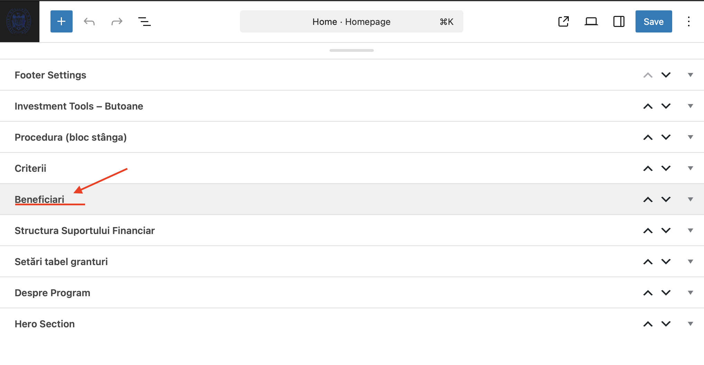Шаг 3. Сохраните изменения.
После внесения изменений нажмите кнопку "Save" (Сохранить), чтобы применить их на сайте.

8. Критерии отбора |Criterii|
Изменение контента
Шаг 1. Перейдите на страницу Home.
Чтобы изменить контент этой секции, перейдите на страницу "Home" из административного меню.
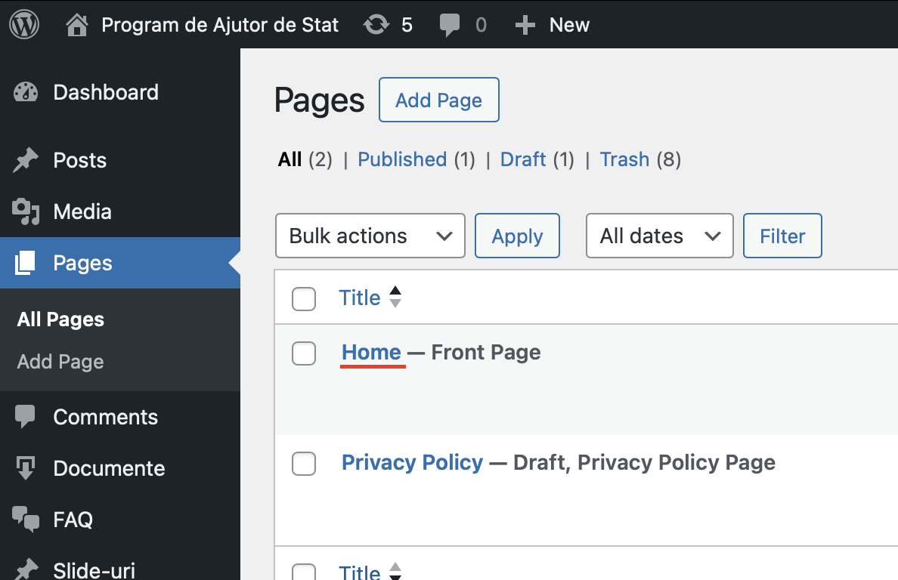Шаг 2. Выберите "Criterii".
На странице "Home" выберите и разверните блок "Criterii" (Критерии), чтобы изменить данные.
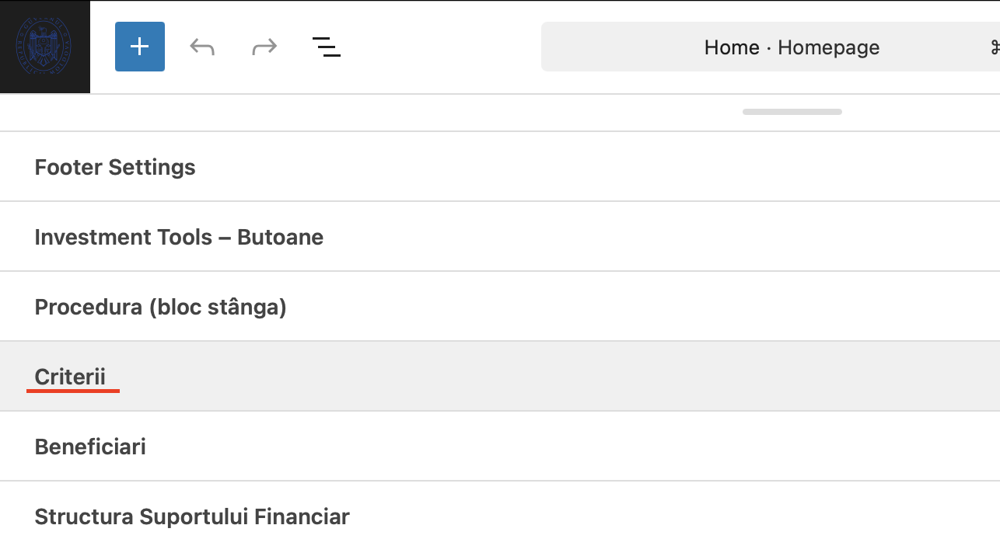Шаг 3. Сохраните изменения.
После внесения изменений нажмите кнопку "Save" (Сохранить), чтобы опубликовать их на сайте.

9. Процедура подачи заявки |Procedura|
Добавление/Удаление файлов
Шаг 1. Перейдите в раздел "Documente".
Чтобы добавить или удалить файлы, перейдите в боковом меню в раздел "Documente" (Документы).
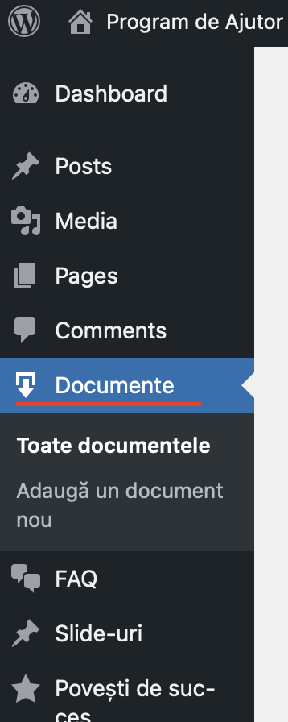Шаг 2. Просмотр списка документов.
В этом разделе вы увидите действующий список с уже добавленными документами.
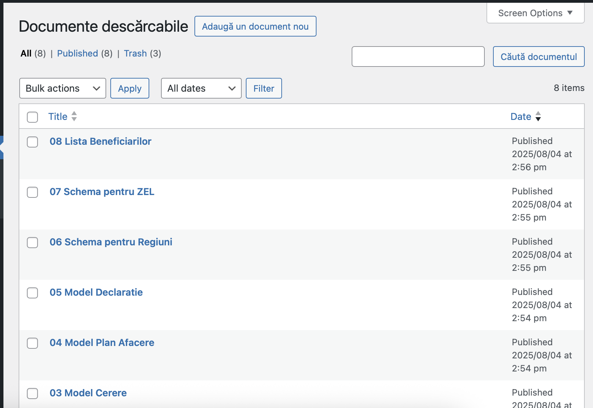Шаг 3. Нажмите "Adaugă un document".
Чтобы добавить новый документ, нажмите кнопку "Adaugă un document" (Добавить документ).
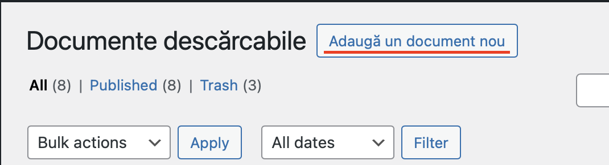Шаг 4. Укажите название документа.
Напишите название документа. Оно будет отображаться только для вас. Обратите внимание, что документы отображаются в порядке очереди, поэтому для изменения порядка их придется удалить и добавить заново в нужной последовательности.
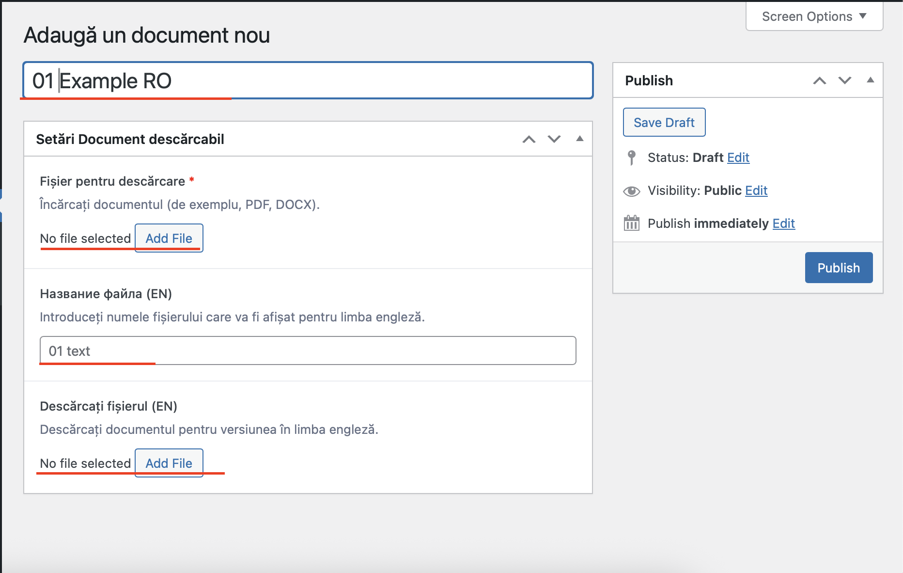Шаг 5. Нажмите "Add file".
После ввода названия нажмите кнопку "Add file" (Добавить файл).
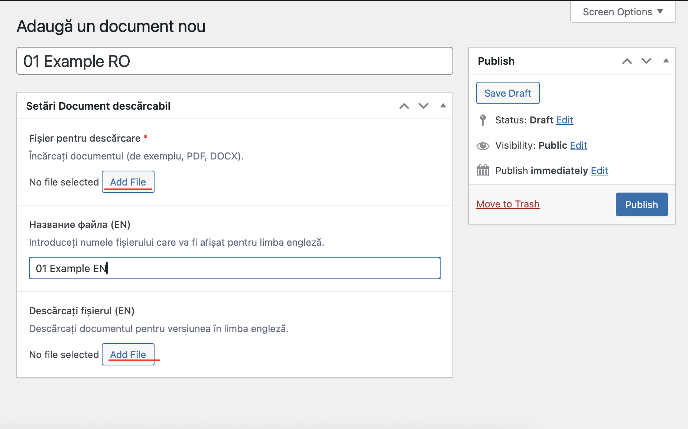Шаг 6. Выберите существующий документ.
В открывшемся окне выберите вкладку "Documents" (Документы), чтобы выбрать уже загруженный файл.
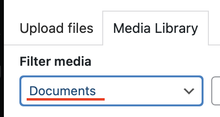Шаг 7. Загрузите новый файл.
Если вам нужен новый файл, перейдите во вкладку "Upload files" (Загрузить файлы) и загрузите его.
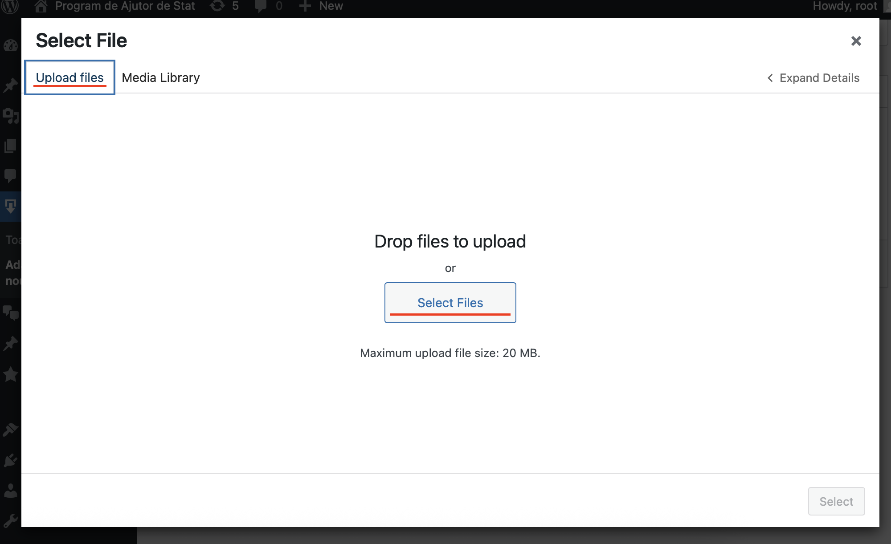Шаг 8. Выберите файл.
После загрузки найдите ваш файл в списке, выберите его и нажмите "Select" (Выбрать).
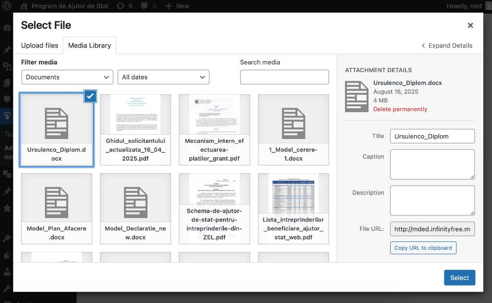Шаг 9. Опубликуйте документ.
Убедившись, что файл добавлен, нажмите кнопку "Publish" (Опубликовать).
Шаг 10. Проверьте список.
После публикации вы должны увидеть новый документ в общем списке.
10. Другие инструменты |Investmente|
Изменение контента
Шаг 1. Перейдите на страницу Home.
Чтобы изменить контент этой секции, зайдите в административную панель и перейдите на страницу "Home".

Шаг 2. Выберите "Investment tool - butane".
На странице "Home" найдите и разверните блок "Investment tools - Butane" (Инструменты инвестирования - Бутан), чтобы изменить данные.
Шаг 3. Измените контент и ссылки.
Измените необходимый контент, а также ссылки, по которым будут переходить кнопки.
Шаг 4. Сохраните изменения.
После внесения изменений нажмите кнопку "Save" (Сохранить), чтобы опубликовать их на сайте.
11. Часто задаваемые вопросы |FAQ|
Добавление/Удаление/Изменение частых вопросов
Шаг 1. Перейдите в раздел "FAQ".
Чтобы добавить, изменить или удалить вопросы, перейдите в раздел "FAQ" в административном меню.
Шаг 2. Просмотр списка вопросов.
Вы увидите список уже существующих вопросов.
Шаг 3. Добавьте новый вопрос.
Чтобы добавить новый вопрос, нажмите "Adaugă întrebări nouă" (Добавить новый вопрос).
Шаг 4. Заполните поля.
В поле "Title" (Название) укажите, как вопрос будет называться для вас в админке. Ниже заполните поля для вопроса и ответа, как они будут отображаться на сайте.

Шаг 5. Опубликуйте новый вопрос.
После заполнения нажмите кнопку "Publish" (Опубликовать).
Шаг 6. Изменение вопроса.
Чтобы изменить существующий вопрос, нажмите на него в списке, измените данные и нажмите "Publish" (Опубликовать).

Шаг 7. Удаление вопроса.
Чтобы удалить вопрос, вы можете либо поставить галочку напротив нужного и выбрать "Move to Trash" (Переместить в корзину) в выпадающем списке "Bulk Actions" (Массовые действия), либо навести на вопрос и нажать на красную надпись "Trash" (Корзина).
12. Подвал сайта |Footer|
Изменение контента
Шаг 1. Перейдите на страницу Home.
Чтобы изменить контент подвала, зайдите в административную панель и перейдите на страницу "Home".

Шаг 2. Выберите "Footer Settings".
На странице "Home" найдите и разверните блок "Footer Settings" (Настройки подвала).
Шаг 3. Измените данные.
Измените данные на нужные вам.
Шаг 4. Сохраните изменения.
После внесения изменений, сохраните их, чтобы опубликовать на сайте.